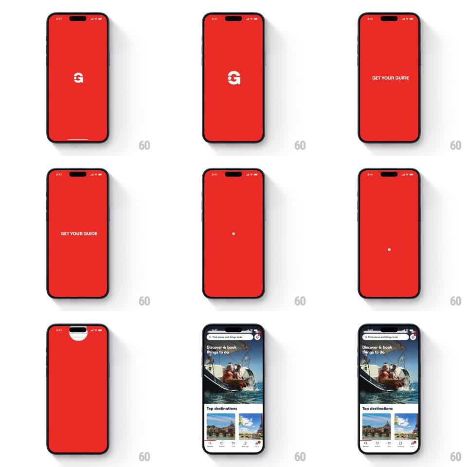

Media
Frame-by-frame

Rebuild this animation 1:1: GetYourGuide's splash - the white G mark on brand red morphs into the GET YOUR GUIDE wordmark, collapses into a dot, then expands from the top of the screen as a circular wipe that reveals the home feed.

Rebuild this animation 1:1: GetYourGuide's splash - the white G mark on brand red morphs into the GET YOUR GUIDE wordmark, collapses into a dot, then expands from the top of the screen as a circular wipe that reveals the home feed. ## Integration Integration: stack-agnostic spec - springs given as stiffness/damping, timed motions as duration + curve; map every value to your framework and animation library of choice. ## Scene Full-bleed brand-red splash. Sequence stages: the white "G" glyph centered, the "GET YOUR GUIDE" wordmark centered, a lone white dot center-screen, then the circular reveal from the top notch area into the home screen (search bar, hero photo, "Discover & book things to do", Top destinations cards, tab bar). ## Motion spec Pattern: logo-to-wordmark morph, collapse to dot, circular reveal into the app. - The G glyph swells slightly (scale 1 -> 1.12, 300ms) then morphs into the full wordmark (letterforms slide apart, 350ms, ease-out). - The wordmark holds (~500ms), then contracts into a single white dot at center (300ms, ease-in). - The dot travels up to the notch area (200ms) and expands as a white circular mask that wipes in the home screen (500ms, ease-out) - red field replaced by content. - Home content is static during the wipe; the tab bar and cards are already laid out. ## Calibration - The morph is typographic: the G's counter opens and letters extend from it, not a crossfade between two images. - The circle reveal originates exactly at the notch, matching where the dot landed. ## Reduced motion Logo crossfades to the wordmark, then a simple fade to the home screen (250ms). ## Don't miss - The red is the brand's saturated warm red - it owns the whole sequence until the wipe. - The dot pause before the wipe is a held beat, not a slow tween.